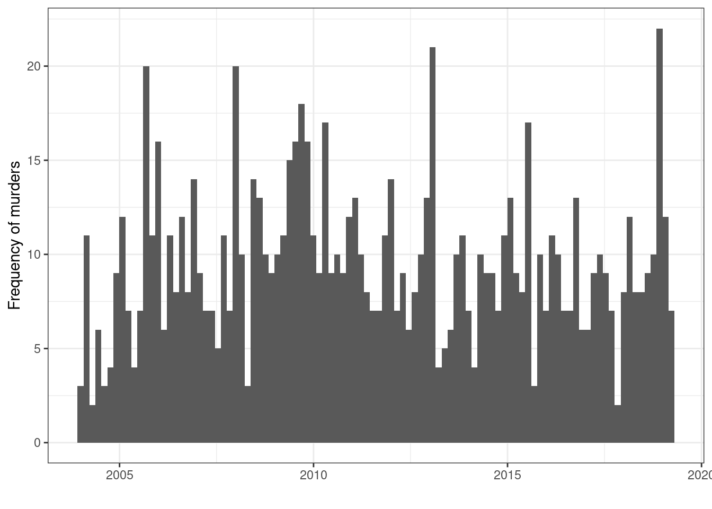

NIWA is searching for the owner of a USB stick found in the poo of a leopard seal… Recognise this video? Scientists analysing the scat of leopard seals have come across an unexpected discovery – a USB stick full of photos & still in working order! https://t.co/2SZVkm5az4pic.twitter.com/JLEC8vuHH0
`stat_bin()` using `bins = 30`. Pick better value with `binwidth`.
uk_serial
Murder UK documents some of the UKs most infamous multiple murderer cases. The uk_serial dataset contains summary information about the documented cases along with approximate timeframes.
number_of_kills years name aka
1 300 1995 - 1998 Dr. Harold Shipman Dr. Death
2 160 1949 - 1983 Dr. John Bodkin Adams
3 26 1978 Peter Dinsdale Bruce Lee
4 21 1865 - 1872 Mary Ann Cotton
5 16 1828 William Burke and William Hare Body Snatchers
6 15 1944 - 1948 John George Haigh Acid Bath Murderer
year_start year_end date_of_first_kill population_million
1 1995 1998 03/1995 58.02
2 1949 1983 08/1949 50.32
3 1973 NA 06/1973 56.19
4 1865 1872 01/1865 24.36
5 1828 NA 02/1828 15.73
6 1944 1948 09/1944 49.02
uk_serial %>%mutate(time =paste(date_of_first_kill, "/01", sep='')) %>%mutate(time =as.Date(time, "%m/%Y/%d")) %>%ggplot(aes(x = time)) +geom_histogram() +ylab("Frequency of known first kill") +xlab("") +theme_bw()
`stat_bin()` using `bins = 30`. Pick better value with `binwidth`.
7.2 Spatiotemporal point pattern data
Using maps to create sf objects of country boundaries:
us <- maps::map("usa", fill =TRUE, plot =FALSE) %>% sf::st_as_sf() %>% sf::st_make_valid()nz <- maps::map("nz", fill =TRUE, plot =FALSE) %>% sf::st_as_sf() %>% sf::st_make_valid()iraq <- maps::map("world", "Iraq", fill =TRUE, plot =FALSE) %>% sf::st_as_sf() %>% sf::st_make_valid()
ggplot(sasquatch) +geom_sf(alpha =0.3) +coord_sf() +geom_sf(data = us, fill =NA) +theme_classic()
Coordinate system already present. Adding new coordinate system, which will
replace the existing one.
nz_earthquakes
GeoNet Quake Search catalogues New Zealand earthquake occurrence; some of these data have been and packaged in stelfi as nz_earthquakes. In this chapter a Hawkes process is fitted to these data.
ggplot(nz_earthquakes) +geom_sf(alpha =0.1) +coord_sf() +geom_sf(data = nz, fill =NA) +theme_classic()
Coordinate system already present. Adding new coordinate system, which will
replace the existing one.
nz_murders
The Homicide Report documents homicides in New Zealand. The nz_murders dataset contains summary information about the documented cases. In this chapter a spatiotemporal self-exciting model is fitted to these data.
data("nz_murders", package ="stelfi")nz_murders
Simple feature collection with 967 features and 11 fields
Geometry type: POINT
Dimension: XY
Bounding box: xmin: 167.9161 ymin: -46.96127 xmax: 178.3955 ymax: -34.54022
Geodetic CRS: +proj=longlat +datum=WGS84 +no_defs +ellps=WGS84 +towgs84=0,0,0
First 10 features:
sex age date year cause killer
1 Male 41 Jan 5 2004 stabbing friend
2 Male 46 Jan 8 2004 pick axe wounds friend
3 Male 0 Jan 15 2004 asphyxiation (suffocation) mother
4 Female 46 Feb 1 2004 blunt force trauma partner
5 Male 10 Feb 2 2004 stabbing father
6 Female 2 Feb 2 2004 stabbing father
7 Male 36 Feb 4 2004 stabbing partners ex-partner
8 Male 20 Feb 8 2004 car crash friend
9 Male 29 Feb 8 2004 blunt force trauma strangers
10 Female 32 Feb 15 2004 blunt force trauma husband
name full_date month cause_cat region
1 Donald Linwood 2004-01-05 January Violent weapon Canterbury
2 James Weeks 2004-01-08 January Violent weapon Canterbury
3 Gabriel Harrison-Taylor 2004-01-15 January Asphyxia Auckland
4 Odette Lloyd-Rangiuia 2004-02-01 February Blunt force trauma Canterbury
5 Te Hau OCarroll 2004-02-02 February Violent weapon Wellington
6 Ngamata OCarroll 2004-02-02 February Violent weapon Wellington
7 Darryn McRobert 2004-02-04 February Violent weapon Canterbury
8 Peretiso Sauni 2004-02-08 February Car crash Auckland
9 Shannon McComb 2004-02-08 February Blunt force trauma Canterbury
10 Asolelei Sameulu 2004-02-15 February Blunt force trauma Auckland
geometry
1 POINT (171.6442 -43.63394)
2 POINT (172.1305 -43.28563)
3 POINT (174.8498 -36.92575)
4 POINT (172.6327 -43.55006)
5 POINT (175.1195 -40.73297)
6 POINT (175.1193 -40.73273)
7 POINT (172.5172 -43.53866)
8 POINT (174.7335 -36.89708)
9 POINT (172.6429 -43.54363)
10 POINT (174.6274 -36.90353)
Warning: Removed 8 rows containing non-finite outside the scale range
(`stat_bin()`).

iraq_terrorism
The Global Terrorism Database (GTD) documents information on terrorism events worldwide; some of these data have been and packaged in stelfi as iraq_terrorism.
Simple feature collection with 654 features and 1 field
Geometry type: GEOMETRY
Dimension: XY
Bounding box: xmin: 0 ymin: -2.974928 xmax: 12.56637 ymax: 2.974928
CRS: NA
First 10 features:
label geom
1 window POLYGON ((10.77117 -2.78183...
2 point POINT (6.8074 -2.034423)
3 point POINT (7.558362 -2.193865)
4 point POINT (8.085083 -2.080938)
5 point POINT (8.121308 -2.522357)
6 point POINT (8.362448 -2.303117)
7 point POINT (9.000749 -2.955328)
8 point POINT (9.147803 -2.243146)
9 point POINT (9.261744 -2.408326)
10 point POINT (8.532312 -2.48986)
ggplot(xyt_sf) +geom_sf(fill =NA) +theme_void()
marked
In this chapter a marked log-Gaussian Cox process is fitted to these data.